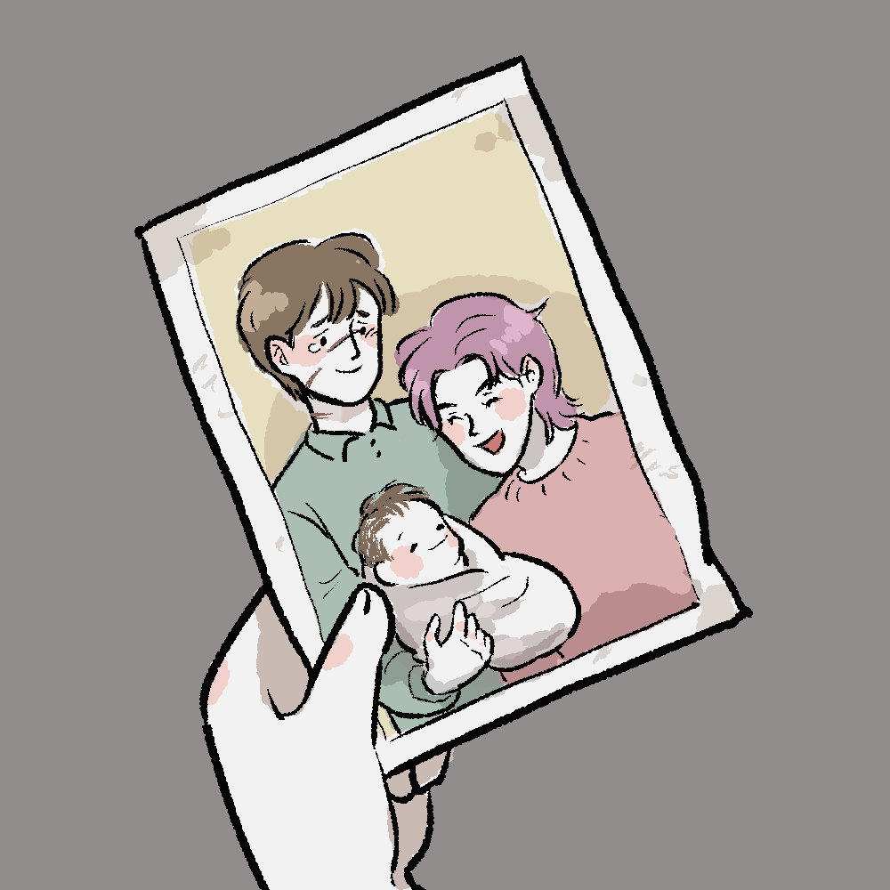

Book7 Chapter25 SHELL COTTAGE
"Who is it?" Bill called.
"It is I, Remus John Lupin!" called a voice over the howling
wind. Harry experenced a thrill of fear; what had happened?
"I am a werewolf, married to Nymphadora Tonks, and you, the Secret-
Keeper of Shell Cottage, told me the addresss and bade me come in
an emergency!"
"Lupin," muttered Bill, and he ran to the door and wenched it
open.
Lupin fell over the threshold. He was white-faced, wrapped in
a traveling cloak, his graying hair windswept. He straightened up,
looked around the room, making sure of who was there, then cried
aloud, "It's a boy! We've named him Ted, after Dora's father!"
Hermione shrieked.
"Wha-? Tonks- Tonks has had the baby?"
"Yes, yes, she's had the baby!" shouted Lupin.
